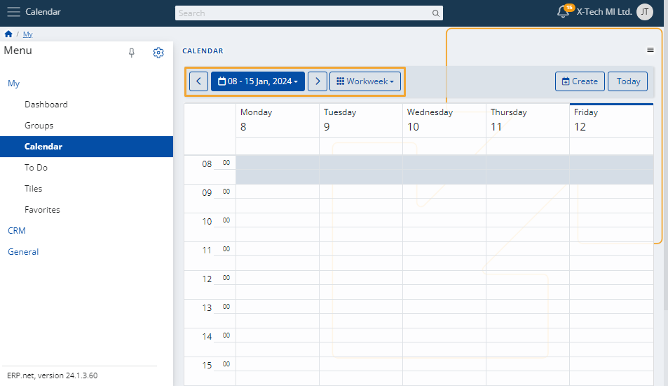

Calendar
This is a personal environment which contains all individual events or tasks you've scheduled for yourself.
Furthermore, it includes group activities from all the social groups you're participating in.
Such events will appear in your calendar as long as you’re set as a responsible person, organizer, or participant in a group activity.

Within the Calendar, you can:
create a new event
change the view in which all events appear (Workweek, Month)
navigate to past or future dates
access any of your scheduled personal or group events.
Time period
To change the view of the Calendar, use the dropdown menu on the right and select either "Month" or "Workweek".
To get to specific weeks or months, use the left and right arrows.
Depending on the view, you can also select a specific week or month from the blue-colored navigator.

Create an event
To add a new event to the Calendar, use the Create button.

You’ll be taken to a separate page where you need to fill necessary information about the activity and the potential participants in it.

When ready, click Save and reload, and the activity will be added to your Calendar.

Note
The screenshots taken for this article are from v24 of the platform.